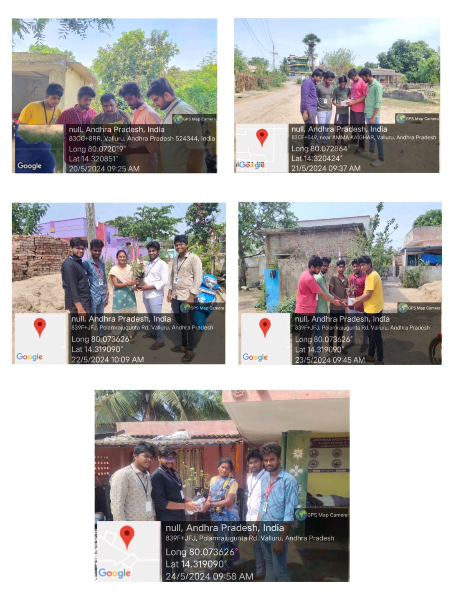

Day 1:
- Describe the tree-planting community service initiative.
- Describe the survey's goal.
- Inquire about their familiarity with tree plantations, any prior involvement, and how important they think it is.
Day 2:
- Emphasize the advantages of tree planting for the environment and the neighborhood.
- Inquire of participants whether they are aware of the advantages for the environment.
- Ask if they have seen any particular advantages in their neighborhood.
Day 3:
- List the difficulties encountered during the tree plantation project.
- Inquire of participants about any challenges they faced while taking part.
- Seek advice on how to overcome these difficulties and enhance upcoming projects.
Day 4:
- Evaluate each participant's contribution to the planting of trees.
- Find out if they have ever planted trees on their own.
- Find out how frequently they take part in tree-planting drives or other similar campaigns.
Day 5:
- Ask participants if the planting of trees has resulted in any beneficial improvements in their neighborhood.
- Find out if they think that local communities should be involved in tree-planting campaigns.
Day 6:
- Find out what the participants think will happen to tree planting in the community in the future.
- Ask them for suggestions on how to get more people involved in tree planting campaigns.
